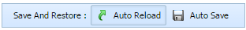

a button that can remain in one of its two states until its current state is changed by user (either from script or from page):

The addButtonTwoState method should be used to add a new buttonTwoState:
myToolbar.addButtonTwoState(id, pos, text, imgEnabled, imgDisabled);
The user should pass a number of parameters to this method:
Note: if the user wants the buttonTwoState to be created text-free, it's necessary to write an empty string as text parameter.
Related sample: ButtonTwoState creation
The following methods that are available for the Button item, can be applied to the buttonTwoState item as well:
Related sample: ButtonTwoState manipulation
Related sample: ButtonTwoState state
Related sample: ButtonTwoState text
Related sample: ButtonTwoState image
Related sample: ButtonTwoState tooltip
All the parameters of the above mentioned methods are the same as those described in the Button Settings Manipulations section.
The user can set one of two states for ButtonTwoState with the help of the following method:
myToolbar.setItemState(id, state, callEvent);
The parameters for this method are the following:
There is also the possibility to get current item's state by calling the getItemState method:
var isPressed = myToolbar.getItemState(id); // returns true/false
The method returns true in case the button is pressed, and false in case the button is released.
Back to top